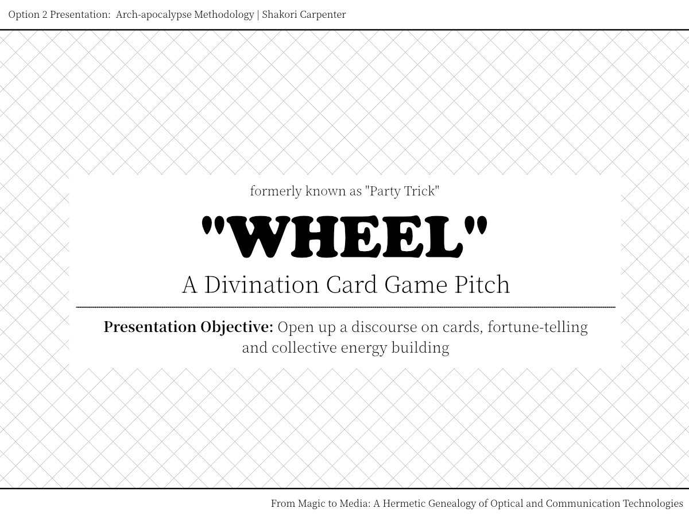
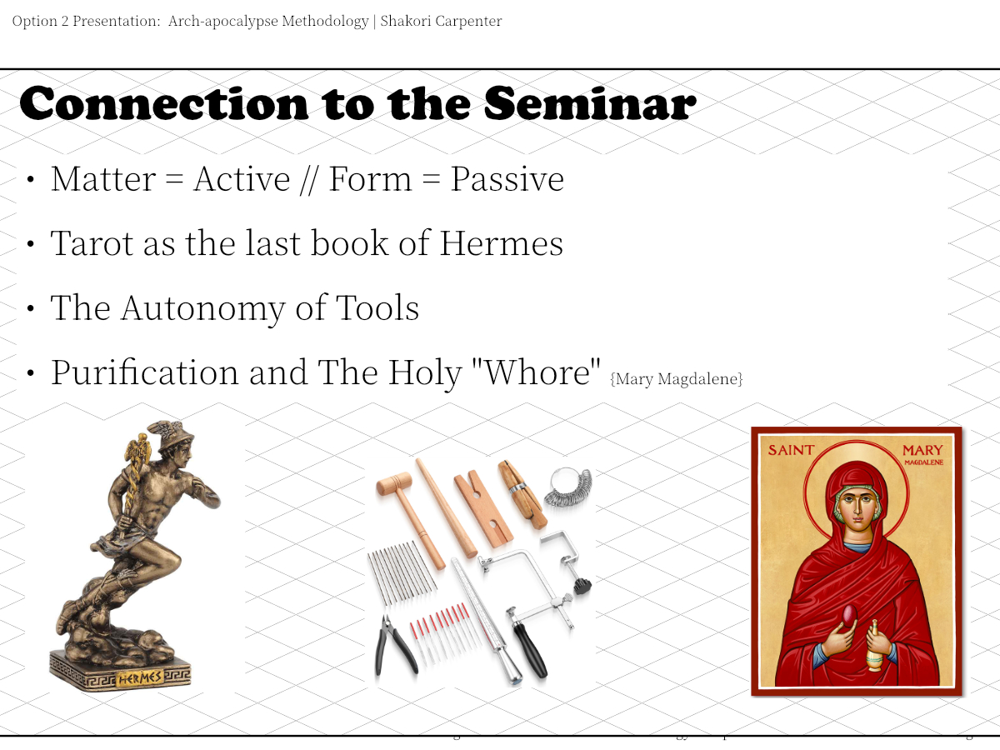
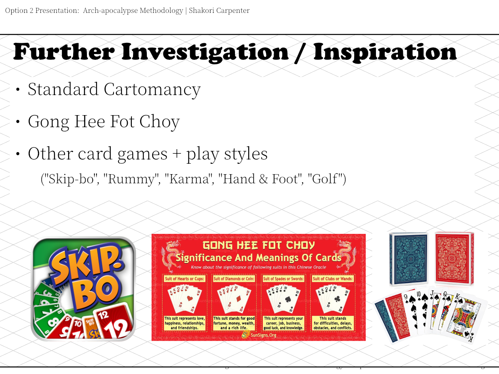
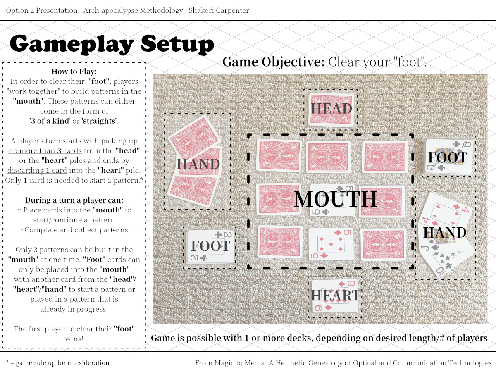
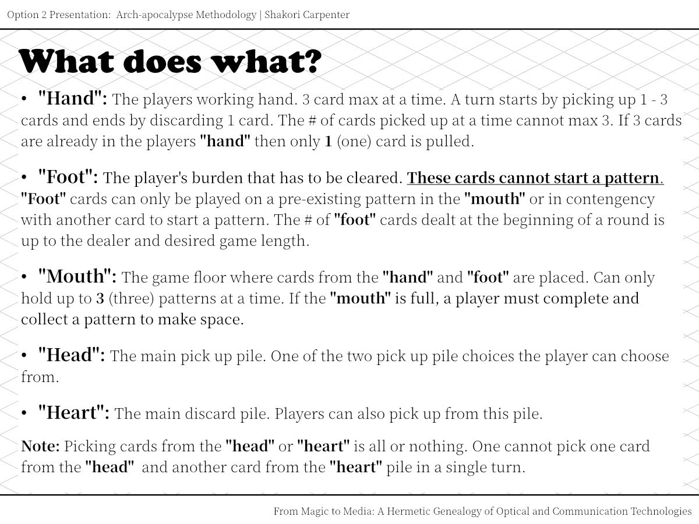
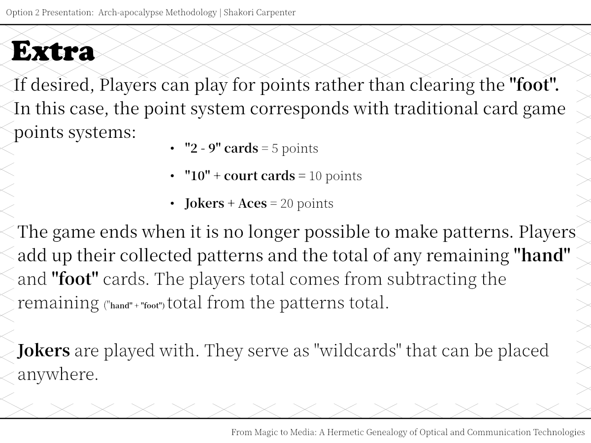
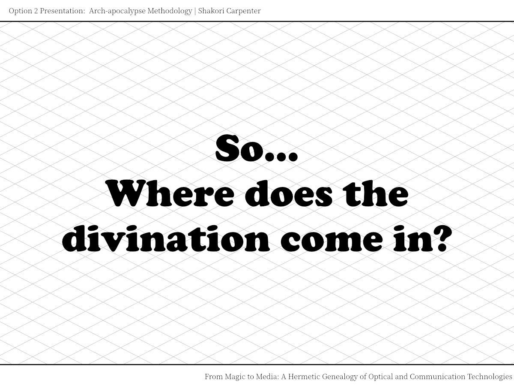
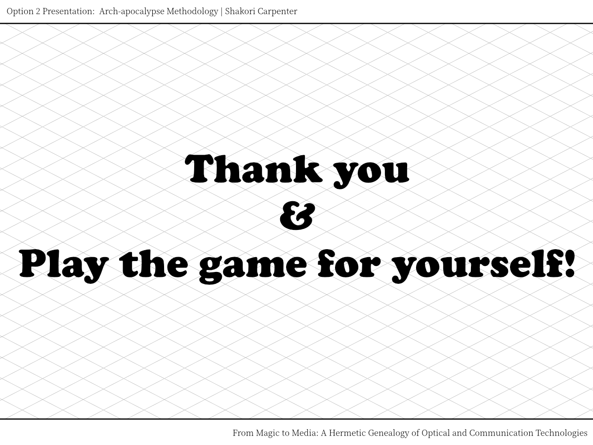

Oree's Borees © 2026 is licensed under CC BY-NC-SA 4.0


I made this game, "WHEEL", for the From Magic to Media: A Hermetic Geneaology of Optical and Communication Technologies seminar at The New Centre. This class was really fascinating and helped me understand that reality, is in fact, magical; whether you choose to subscribe to the belief or not. For a final work, students had the choice between 3 topics in which they had to produce a quick 5 minute presentation for:
I chose to do option 2. Farshid Kazemi's proposal defines an arch-apocalypse as a method(ology) [a technique, mechinaton, tool, perspective/lens] that "seeks to achieve [a goal] to excavate, unveil, and recover the hidden, the repressed, the disavowed and/or oppressed and marginalized aspects of the past that would otherwise" {in order to} "destabilize our common conceptions of history and the ruling hegemonic ideaology". It is a critical method(ology) of reading histories and/or the past. Very exciting stuff (*ᵕᴗᵕ)⁾⁾.


This assignment came at a good time of thinking as I had a conversation with two friends about the purity of our tools and the steps of ensuring such is such. Purity in this case being: free, in some capacity, from hands that taint. Easy example: Ai -> tech in general. How does one purify tech? I don't remember the exact thread of convo between us, but I remember one of my friends claiming that tools can only be deemed purified if we see its production through by our own hand. I didn't disagree with their statement, but I couldn't fully agree with it either and I didn't know why, so I just went about my life with that sentiment in my back pocket. That convo was sometime mid August and the game being conceived occured the second week of September. Over that time, I came to understand that I disagreed with my friend because I cherished the significance of the "Holy Whore" (aka Mary Magdalene). This woman, (once) human tool, fully, completely, unconditionally lovingly forgiven by Jesus Christ. The acceptance of her without the greivence (condition) of what she no longer has without denial about *her* [cleanliness] from [dirtiness]. I think many people have a hard time getting past virginity (a condition of usage). Anyways. Diff convo for diff project.





I really like playing cards and think various card divination techinques are really cool. The idea behind making a card game came from thinking about that convo with friends, commonly interacted with tools, feeling energies in space (vibes ~ ambiance) and the idea of a literal collective reading produced by everyone (through play). Feeling the space through a game and through random number generation getting some reading. I don't know how the divination factor works, ya know, but that's field research. All there is now is a game haha. Try it out if you like cards ♧

Oree's Borees © 2026 is licensed under CC BY-NC-SA 4.0


[{BONUS} My thoughts on Affinity by Canva: This was my first time using Affinity because my adobe subscription expired and I'm not paying for it again nor pirating it. It wasn't bad considering it was my first time making anything with a different software in a while, but I understand how those big budgets get us hotkeys. The way the little finger mouse on the laptop navigates the work space kind of drives me crazy (as I use both mouse mouse and finger mouse at the same time). Double finger up/down scroll = zooming out/in... Okay... Pinching inwards/outwards with two fingers to scroll up and down??? Demonic. The layer system is kind of crazy too. Like each page has its own layer instead of 1 collective layer for the doc. At first I was like "wait okay cool", but then as I started, I quickly became disorganzied and confused. I was making this presentation the day after the day it was due and this was the last thing to do before embarking on a 4 hour drive, so I'll have to see how the layer system works when I'm not in a "crunch". I don't have anything specifically good to say which is okay considering only two things annoyed me. So yea. Thanks for reading :)]